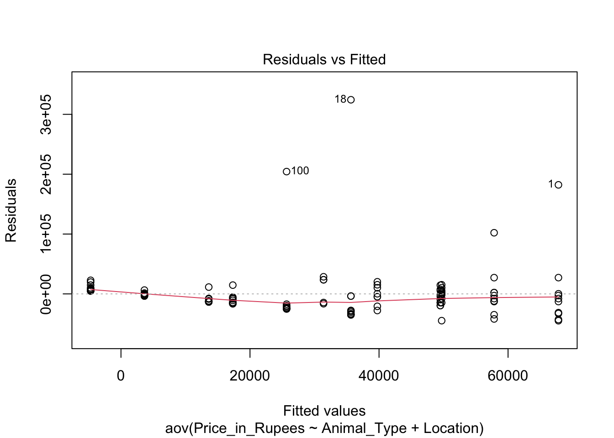
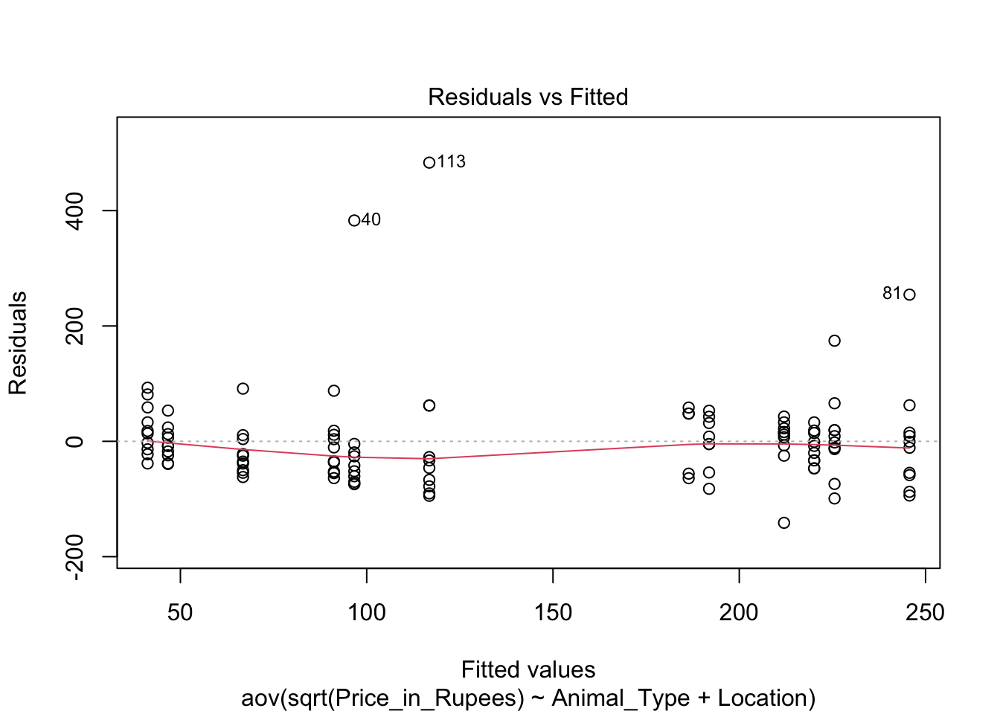
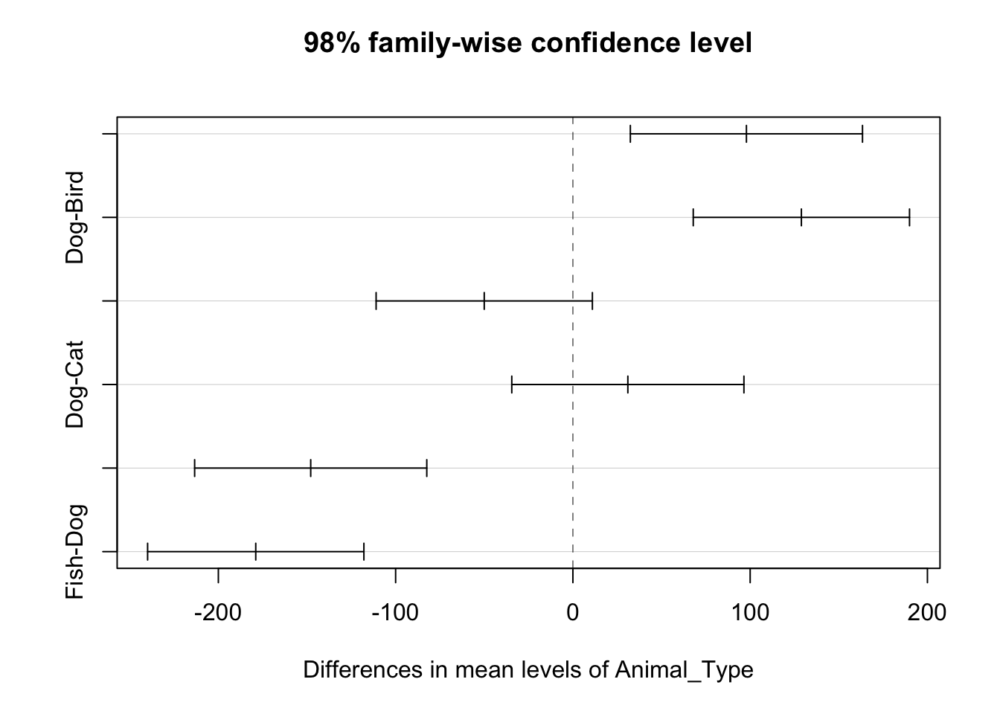

data <- read.csv("~/Stats Work/Data Science HW/shirleytor.github.io/animal_prices.csv") %>%
mutate(Price_in_Rupees=as.numeric(str_remove_all(Price, "[,Rs]")))
view(data)
unique<-unique(data[,5])Pet Ownership in Sri Lanka
Introduction
Pet ownership has been extremely common in human society for a significant portion of history. Within the last century, rates of pet ownership have increased as motives for pet ownership have shifted from practical to those concerning emotional well-being and entertainment (Konstantinova). Looking at ways to measure their overall perceived benefit can provide insight into the way different factors influence a pet’s perceived value. The cost of a pet is commonly understood as being one such way to measure a pet’s emotional, physical, and economic value, meaning that factors influencing a pet’s cost can provide insight into determinants of pet value and the nuances to their large importance in society. Two possible factors influencing pet value include the type of pet that is owned and the location where the pet originates from.
This analysis will measure the effect of these factors on pet value within the context of specific cities in Sri Lanka. Research into pet ownership trends in Anuradhapura, Sri Lanka suggests certain pets might be more valued than others based on their increased prevalence among pet owners (Rathish). Using two-way Analysis of Variance (ANOVA), the type of pet will be evaluated alongside whether a pet resides in either Gampaha, Kandy, or Colombo, which are cities in Sri Lanka, to determine if either influences the cost of a pet. A model based on factor effects will then be developed in accordance to the results of this analysis. In order to evaluate the effect of these factors on pet prices, section two of this paper will discuss the data used and its appropriateness for analysis, section three will discuss the usage of two-way ANOVA to evaluate these factors and the implications of its results, and section four will discuss important points to take away from this analysis and potential future research directions.
Methods
The data used for this analysis originates from Ikman.lk, a popular website for buying pets in Sri Lanka. It was collected through a script that compiles data from posts about pet sales (Jayawardena). The dataset itself has eleven variables, with one of them consisting of a url identifier for the post it pertains to. For the purpose of this analysis, only three variables are being examined: pet price, which is a numeric continuous variable, type of animal being sold, which is a categorical variable, and city where the animal is being sold, which is also a categorical variable. Pet price is measured in Rupees, Sri Lanka’s national currency, and is the response variable in this analysis. Type of pet being sold is an explanatory variable that consists of the following pet types: dog, cat, fish, and bird. City where the pet is being sold is also an explanatory variable that consists of the cities of Gampaha, Kandy, and Colombo. In order for all sample groups in this analysis to be balanced, they all have the same sample size of 10 different pet prices. The total sample size across all sample groups is 120 different pet prices. The sample groups were formed by using R to filter for pet prices corresponding to a specific pet type and Sri Lankan city-district. Two random districts corresponding to a specific city were chosen, and the first five prices related to a specific pet from each district were chosen to be part of the city sample. For instance, the first five bird prices from Kadawatha, Gampaha and the first five bird prices from Kiribathgoda, Gampaha were chosen to form the sample corresponding to bird prices in Gampaha. Since the data is ordered randomly and the districts were chosen randomly, there is no bias involved with the selection of the data. Each of these samples is thus random and can be used for inference. Due to the small sample size per sample group, it is unlikely they reflect the actual population of pet prices corresponding to a specific animal in a specific city. The sample size should still be large enough to determine if either factor affects pet price, however.
Data cleaning that samples from city-pet categories with 5 or more observations is performed with the code below.
more_than_100 = c()
for (each in unique){
if (nrow(dplyr::filter(data,Location==each)) > 1){
more_than_100 = c(more_than_100,each)
}
}
cities = c()
for (each in more_than_100){
if (nrow(dplyr::filter(data,Location==each, Animal_Type=="Dog")) > 5 & nrow(dplyr::filter(data,Location==each, Animal_Type=="Cat")) > 5 & nrow(dplyr::filter(data,Location==each, Animal_Type=="Fish")) > 5 & nrow(dplyr::filter(data,Location==each, Animal_Type=="Bird"))>5){
cities = c(cities,each)
}
}
Gampaha11 <- filter(data, Location==" Kadawatha, Gampaha", Animal_Type=="Dog" )[1:5,]
Gampaha21 <- filter(data, Location==" Kadawatha, Gampaha", Animal_Type=="Cat" )[1:5,]
Gampaha31 <- filter(data, Location==" Kadawatha, Gampaha", Animal_Type=="Fish" )[1:5,]
Gampaha41 <- filter(data, Location==" Kadawatha, Gampaha", Animal_Type=="Bird" )[1:5,]
Gampaha12 <- filter(data, Location ==" Kiribathgoda, Gampaha", Animal_Type=="Dog" )[1:5,]
Gampaha22 <- filter(data, Location==" Kiribathgoda, Gampaha", Animal_Type=="Cat")[1:5,]
Gampaha32 <- filter(data, Location==" Kiribathgoda, Gampaha", Animal_Type=="Fish")[1:5,]
Gampaha42 <- filter(data, Location==" Kiribathgoda, Gampaha", Animal_Type=="Bird" )[1:5,]
Kandy11 <- filter(data, Location==" Kandy City, Kandy", Animal_Type=="Dog" )[1:5,]
Kandy21 <- filter(data, Location==" Kandy City, Kandy", Animal_Type=="Cat" )[1:5,]
Kandy31 <- filter(data, Location==" Kandy City, Kandy", Animal_Type=="Fish" )[1:5,]
Kandy41 <- filter(data, Location==" Kandy City, Kandy", Animal_Type=="Bird" )[1:5,]
Kandy12 <- filter(data, Location==" Katugastota, Kandy", Animal_Type=="Dog" )[1:5,]
Kandy22 <- filter(data, Location==" Katugastota, Kandy", Animal_Type=="Cat" )[1:5,]
Kandy32 <- filter(data, Location==" Katugastota, Kandy", Animal_Type=="Fish" )[1:5,]
Kandy42 <- filter(data, Location==" Katugastota, Kandy", Animal_Type=="Bird" )[1:5,]
Colombo11 <- filter(data, Location==" Kotte, Colombo", Animal_Type=="Dog" )[1:5,]
Colombo21 <- filter(data, Location==" Kotte, Colombo", Animal_Type=="Cat" )[1:5,]
Colombo31 <- filter(data, Location==" Kotte, Colombo", Animal_Type=="Fish" )[1:5,]
Colombo41 <- filter(data, Location==" Kotte, Colombo", Animal_Type=="Bird" )[1:5,]
Colombo12 <- filter(data, Location==" Kolonnawa, Colombo", Animal_Type=="Dog" )[1:5,]
Colombo22 <- filter(data, Location==" Kolonnawa, Colombo", Animal_Type=="Cat" )[1:5,]
Colombo32 <- filter(data, Location==" Kolonnawa, Colombo", Animal_Type=="Fish" )[1:5,]
Colombo42 <- filter(data, Location==" Kolonnawa, Colombo", Animal_Type=="Bird" )[1:5,]
combination <-rbind(Gampaha11,Gampaha12,Gampaha21,Gampaha22,Gampaha31,Gampaha32,Gampaha41,Gampaha42,Kandy11,Kandy12,Kandy21,Kandy22,Kandy31,Kandy32,Kandy41,Kandy42,Colombo11,Colombo12,Colombo21,Colombo22,Colombo31,Colombo32,Colombo41,Colombo42) %>%
mutate(Location = case_when(
Location == " Kotte, Colombo" ~ "Colombo",
Location == " Kolonnawa, Colombo" ~ "Colombo",
Location == " Katugastota, Kandy" ~ "Kandy",
Location == " Kandy City, Kandy" ~ "Kandy",
Location == " Kiribathgoda, Gampaha" ~ "Gampaha",
Location == " Kadawatha, Gampaha" ~ "Gampaha"
))inferior_fit <- aov(Price_in_Rupees~Animal_Type + Location, data=combination)
anova(inferior_fit)Analysis of Variance Table
Response: Price_in_Rupees
Df Sum Sq Mean Sq F value Pr(>F)
Animal_Type 3 4.7523e+10 1.5841e+10 7.4750 0.0001368 ***
Location 2 6.2369e+09 3.1184e+09 1.4715 0.2341891
Residuals 107 2.2676e+11 2.1192e+09
---
Signif. codes: 0 '***' 0.001 '**' 0.01 '*' 0.05 '.' 0.1 ' ' 1TukeyHSD(inferior_fit,conf.level=.975,which="Animal_Type") Tukey multiple comparisons of means
97.5% family-wise confidence level
Fit: aov(formula = Price_in_Rupees ~ Animal_Type + Location, data = combination)
$Animal_Type
diff lwr upr p adj
Cat-Bird 16044.20 -20596.886 52685.291 0.5918521
Dog-Bird 32166.67 -1969.075 66302.409 0.0390312
Fish-Bird -22037.10 -56172.842 12098.642 0.2542078
Dog-Cat 16122.46 -20518.625 52763.552 0.5879680
Fish-Cat -38081.30 -74722.391 -1440.214 0.0182015
Fish-Dog -54203.77 -88339.509 -20068.025 0.0000798fit<- aov(sqrt(Price_in_Rupees)~Animal_Type + Location, data=combination)
anova(fit)Analysis of Variance Table
Response: sqrt(Price_in_Rupees)
Df Sum Sq Mean Sq F value Pr(>F)
Animal_Type 3 605119 201706 29.8031 4.379e-14 ***
Location 2 13783 6891 1.0182 0.3647
Residuals 107 724173 6768
---
Signif. codes: 0 '***' 0.001 '**' 0.01 '*' 0.05 '.' 0.1 ' ' 1TukeyHSD(fit,conf.level=.975,which="Animal_Type") Tukey multiple comparisons of means
97.5% family-wise confidence level
Fit: aov(formula = sqrt(Price_in_Rupees) ~ Animal_Type + Location, data = combination)
$Animal_Type
diff lwr upr p adj
Cat-Bird 97.89168 32.41165 163.37170 0.0002247
Dog-Bird 128.89603 67.89322 189.89884 0.0000001
Fish-Bird -50.00844 -111.01125 10.99436 0.0924279
Dog-Cat 31.00435 -34.47568 96.48438 0.5272384
Fish-Cat -147.90012 -213.38015 -82.42009 0.0000000
Fish-Dog -178.90447 -239.90728 -117.90166 0.0000000City <- combination$Location
Animal_Type <- combination$Animal_Type
Cost_in_Rupees <- combination$Price_in_RupeesData Analysis
Analysis of Variance Table
Response: Price_in_Rupees
Df Sum Sq Mean Sq F value Pr(>F)
Animal_Type 3 4.7523e+10 1.5841e+10 7.4750 0.0001368 ***
Location 2 6.2369e+09 3.1184e+09 1.4715 0.2341891
Residuals 107 2.2676e+11 2.1192e+09
---
Signif. codes: 0 '***' 0.001 '**' 0.01 '*' 0.05 '.' 0.1 ' ' 1 Tukey multiple comparisons of means
97.5% family-wise confidence level
Fit: aov(formula = Price_in_Rupees ~ Animal_Type + Location, data = combination)
$Animal_Type
diff lwr upr p adj
Cat-Bird 16044.20 -20596.886 52685.291 0.5918521
Dog-Bird 32166.67 -1969.075 66302.409 0.0390312
Fish-Bird -22037.10 -56172.842 12098.642 0.2542078
Dog-Cat 16122.46 -20518.625 52763.552 0.5879680
Fish-Cat -38081.30 -74722.391 -1440.214 0.0182015
Fish-Dog -54203.77 -88339.509 -20068.025 0.0000798Analysis of Variance Table
Response: sqrt(Price_in_Rupees)
Df Sum Sq Mean Sq F value Pr(>F)
Animal_Type 3 605119 201706 29.8031 4.379e-14 ***
Location 2 13783 6891 1.0182 0.3647
Residuals 107 724173 6768
---
Signif. codes: 0 '***' 0.001 '**' 0.01 '*' 0.05 '.' 0.1 ' ' 1 Tukey multiple comparisons of means
97.5% family-wise confidence level
Fit: aov(formula = sqrt(Price_in_Rupees) ~ Animal_Type + Location, data = combination)
$Animal_Type
diff lwr upr p adj
Cat-Bird 97.89168 32.41165 163.37170 0.0002247
Dog-Bird 128.89603 67.89322 189.89884 0.0000001
Fish-Bird -50.00844 -111.01125 10.99436 0.0924279
Dog-Cat 31.00435 -34.47568 96.48438 0.5272384
Fish-Cat -147.90012 -213.38015 -82.42009 0.0000000
Fish-Dog -178.90447 -239.90728 -117.90166 0.0000000In order to perform the F test, homoscedasticity across all sample groups under a specific model is an assumption that needs to be met. In terms of this analysis, that means the variance in pet prices within each subgroup needs to be similar.
inferior_fit <- aov(Price_in_Rupees~Animal_Type + Location, data=combination)
plot(inferior_fit,which = 1)
Each group of points in this figure represents a specific subgroup of pet prices corresponding to a specific type of pet in a specific city. When the spread of points within each subgroup is compared to the spread of them in other subgroups, it is evident that different subgroups have different spreads, meaning they have different variances in pet price.
plot(fit,which = 1)
As this figure shows, the variances within each group resemble each other significantly more when prices are interpreted in terms of their square root. Since homoscedasticity is necessary for the F-test, the rest of this analysis will interpret pet prices in terms of their square roots instead of the prices themselves. By making sure that homoscedasticity is met, the potential effects of pet type and location on pet prices can then be seen.
The purpose of the ANOVA analysis was to see if either pet type or location individually had an effect on the prices of pets. For this reason, two F-tests were conducted for each possible variable. Each variable was given an alpha value of .025 in order to maintain a family-wise confidence level of 95%. The first F-test consists of mean square pet type divided by mean square error, which is the variance of the mean square-root prices in terms of pet type only for all observations divided by the variance of all residuals given the entire model is used to find the fitted value. This is a measure of the amount of variance in the full model explained by pet type being a factor divided by the variance of the residuals given the full model. If pet type is not a significant factor, the numerator of this value should be approximately equal to one variance, meaning the resulting F-score should be approximately one. The null hypothesis for this test is that pet type is not a significant factor, meaning there would be close to no difference in the mean square root prices per pet type. The p-value for the F-test corresponding to pet-type, however, was lower than .025, meaning this null hypothesis is most likely not true and pet type is a significant factor in this model. A second F-test was also performed to test whether a sale occurring in Gampaha, Kandy, or Colombo influenced square root pet prices; since the test resulted in a p-value greater than .025, the null hypothesis that residing in one of these three cities does not have a significant effect on square root pet prices cannot be dismissed.
plot(TukeyHSD(fit,conf.level=.975,which="Animal_Type"))
From top to bottom, this figure presents confidence intervals for the following pairwise comparisons: cat-bird, dog-bird, fish-bird, dog-cat, fish-cat, and fish-dog. The family wise confidence level is 97.5% because comparisons concerning pet type all have an alpha value of .025. The confidence intervals for the cat-bird, dog-bird, fish-cat, and fish-dog comparisons do not cover zero, meaning this analysis suggests 97.5% confidence of these pet groups possessing different prices from one another throughout Colombo, Kandy, and Gampaha. Since the dog-cat and fish-bird comparisons cover zero, there does not appear to be a significant difference among both pairs of pet price averages throughout Colombo, Kandy, and Gampaha. Both of these sets of comparisons suggest there is an overall difference in price between mammalian pets and non-mammalian pets among the residents of Colombo, Kandy, and Gampaha, which corresponds to people in all three cities assigning differents levels of value to mammalian and non-mammalian pets. It is also possible that dogs and cats, as the most popular pets worldwide, have significantly higher prices in Colombo, Kandy, and Gampaha than all other pets, including other mammalian ones. In order to determine which hypothesis is accurate, however, more analysis would need to be conducted. Based on this analysis, an appropriate model for predicting the prices of pets in Gampaha, Kandy, and Colombo should consist of the average pet price per species of pet.
Conclusions
The species of a pet appears to have a significant influence on its pricing in the cities of Gampaha, Kandy, and Colombo. Possible improvements to this analysis involve extending it to more cities in Sri Lanka through the inclusion of other cities or through redoing this analysis under a mixed-effects model. This would be in order to definitively exclude location as an influence on the prices of pets in Sri Lanka. Differences in pricing also seem to be most pronounced between the mammalian and non-mammalian species of the sample analyzed. In order to determine whether this difference is based on the status of a pet as a mammalian or non-mammalian animal, one-way ANOVA could be conducted comparing these two groups of pets.
References
Jayawardena, Lasal. “Sri Lanka Animal Prices Dataset.” Kaggle, 31 Oct. 2021, www.kaggle.com/datasets/lasaljaywardena/sri-lanka-animal-prices-dataset.
Konstantinova, Anastasia, et al. “Perceived Benefits and Costs of Owning a Pet in a Megapolis: An Ecosystem Services Perspective.” MDPI, 24 Sept. 2021, www.mdpi.com/2071-1050/13/19/10596.
Rathish, Devarajan, et al. “Household Preferences for Pet Keeping: Findings from a Rural District of Sri Lanka.” PLOS ONE, 22 Nov. 2022, journals.plos.org/plosone/article?id=10.1371%2Fjournal.pone.0277108.